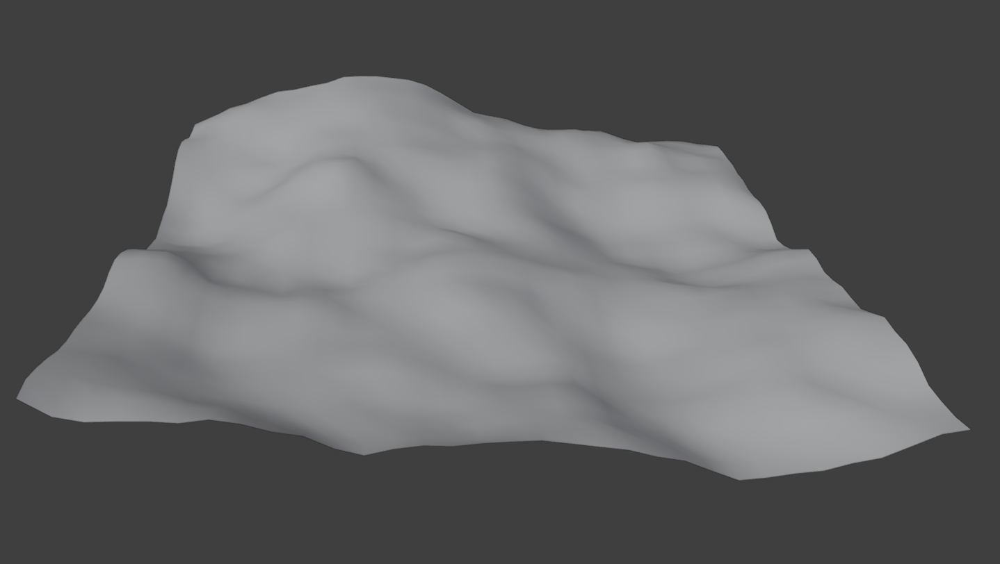
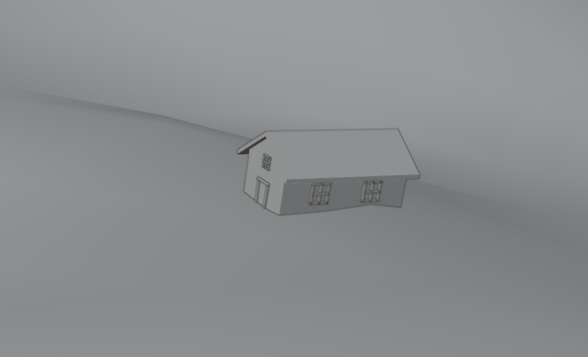
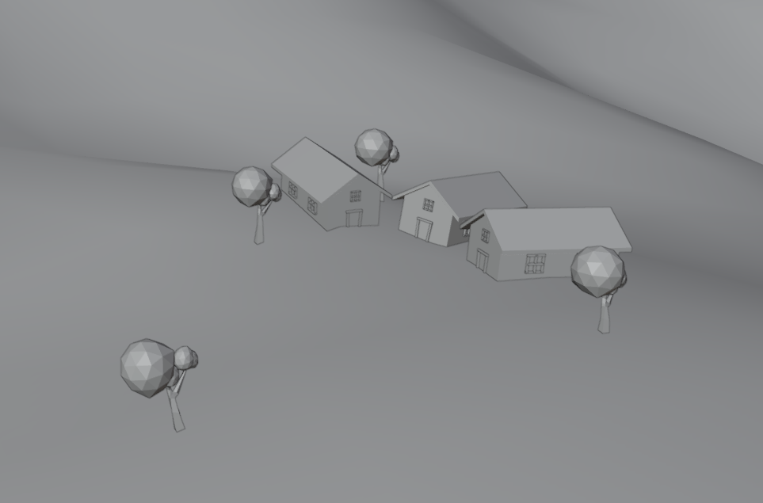
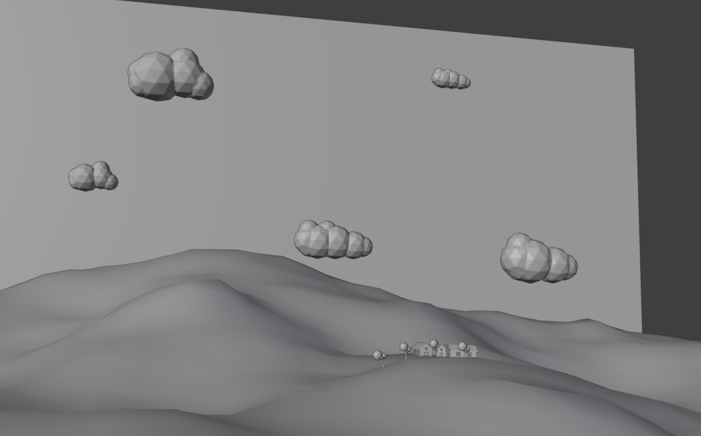
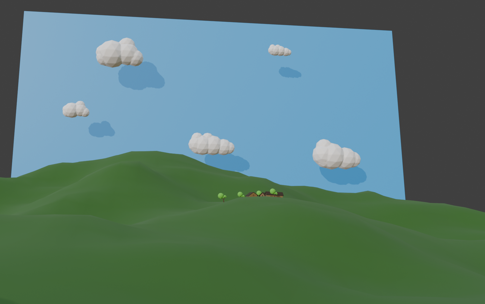
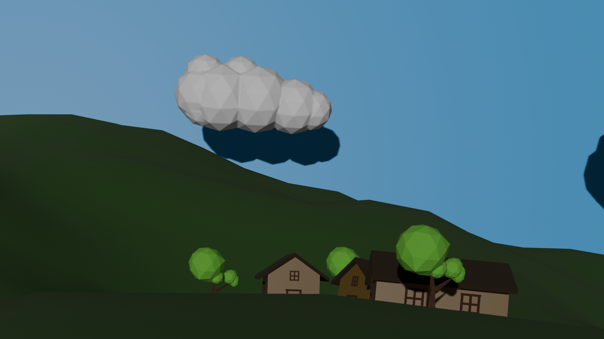
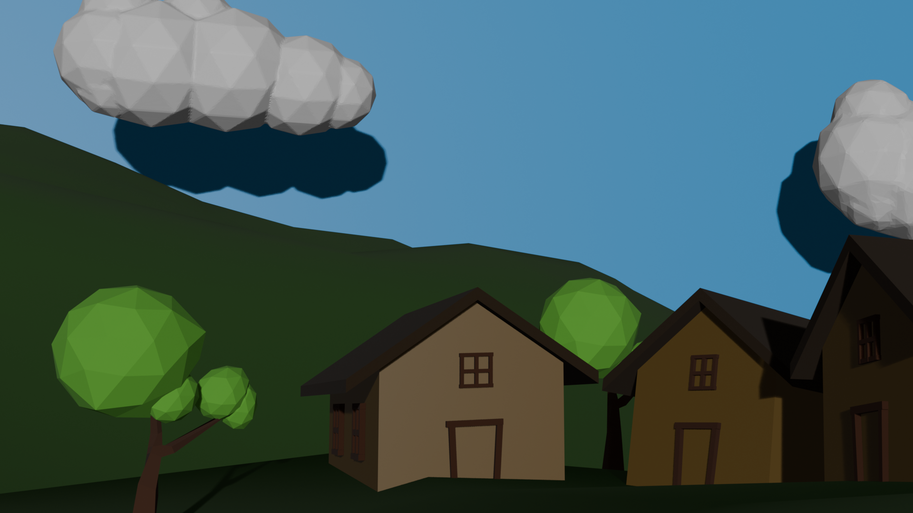
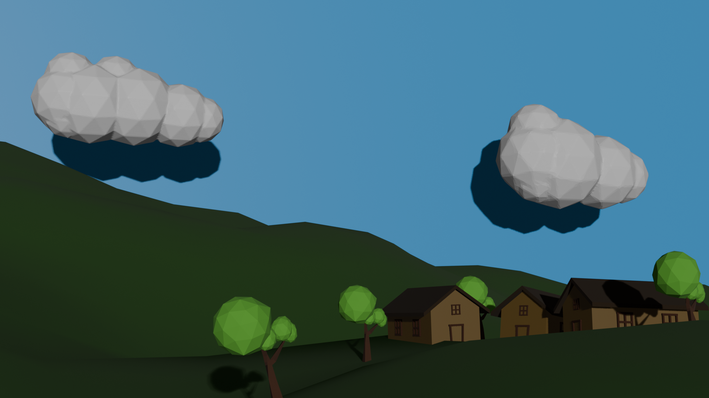

Terrain Modelling
we first start with the geometric plane and shape it into the hills and valley as a landscape to place our objects on. I added two different textures to make it look more realistic, one as displace, and one as texture.

House Modelling
I created a house with a beveled roof, doors, and small windows on it.

Village Layout and Trees
I then arranged the house to form a small village. I also added trees around the environment to give it more life.

Clouds and Scene Composition
I then added low-poly clouds around the environment and moved more of the elements of the house, trees, and clouds to look more cohesive.

Materials and Final Scene
finally i applied all the materials to the terrain while adding colors to the buildings itself. I initially struggled with adding two textures onto one space, but was able to figure it out by selecting specific faces.

Final Images


